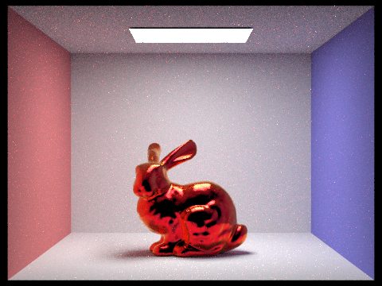

Accomplishments So Far
One thing that we have accomplished is updating `raytrace_pixel` to generate RGB values for each sample ray. To do so we created a helper function to sample RGB values based on three normal distributions for each wavelength plot. We then passed the sampled wavelength to `generate_ray.` Finally we updated the ray constructor to accept a Vector3D for the sampled RGB wavelength.
We also created a new BSDF for thin-film modeled after the microfacet BSDF. To do this, we updated the calculation of the Fresnel term to use phase, s-polarization/p-polarization, and wavelength dependent transmittance/reflectance. We also had to refactor code to parameterize this BSDF with a thickness and thin-film material index of refraction. We changed dae files accordingly to include these parameters and modified the Collada parser to read in the new values.
Once implemented, we tried to render some files and debugged issues we ran into. This included fixing how transmittance was being calculated for the Fresnel term and other issues with code refactoring.
Preliminary Results
Our initial attempt at rendering CBbunny by implementing a thin-film model and changing the calculation for the Fresnel term (Left Image). Our rendering of CBbunny after fixing issues with our initial Fresnel term calculation attempt (we had not been considering the contributions for both s-polarized and p-polarized light). We also fixed parts of our code where we had not been correctly passing along our wavelength parameter to subsequent functions (Middle Image). The current implementation removes a lot of the noise (Right Image). More renderings of CBbunny, CBdragon, and CBspheres with our most up to date code can be viewed on our slides.

|

|

|
Reflect on the Progress
By the halfway point of the project, we had hoped to have implemented the necessary functions to render iridescence due to thin-film interference. We would have then moved on to handling diffraction, modeling for example, the scenario of iridescence due to scratches on the surface of an object. While we have implemented the necessary code, such as refactoring code to use a spectral representation of light and extending our microfacet BSDF to approximate thin-film interference effects, we’ve run into bugs in our implementation that we are still working on. We are therefore going to focus on iridescence due to thin-film interference only for the remainder of the project.
Updates to Work Plan
Our revised goal is to render a variety of iridescent objects where the iridescence is solely a result of thin-film interference. Once we are able to correctly render iridescence for the scenarios above (constant film thickness, area lights), we will handle variations in film thickness and environment-mapped lighting.
Links